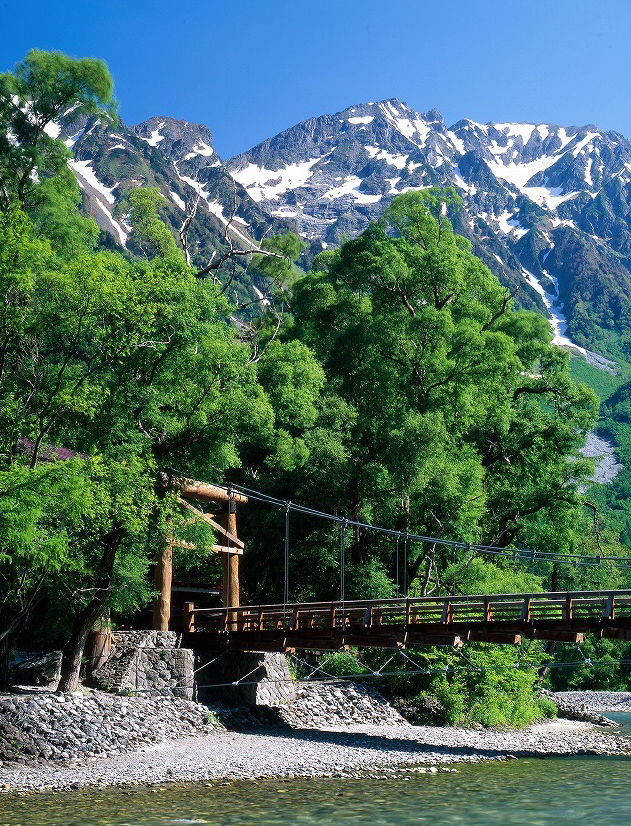

長野
長野四季分明，夏季涼爽，自然渡假景區眾多，是日本中部的避暑勝地。
長野雖然不靠海，但只要一抬頭就能望見連綿不絕的壯闊山景，這是信州人的日常風景；北、中央、南阿爾卑斯山、以及御嶽山、八岳山、浅間山、加上北信五岳、志賀高原及關田山脈等，森林、古道、高原、在被這豐富的大自然風景包圍的同時，盡情地享受戶外活動，是到長野不可或缺的旅遊行程之一。


長野四季分明，夏季涼爽，自然渡假景區眾多，是日本中部的避暑勝地。
長野雖然不靠海，但只要一抬頭就能望見連綿不絕的壯闊山景，這是信州人的日常風景；北、中央、南阿爾卑斯山、以及御嶽山、八岳山、浅間山、加上北信五岳、志賀高原及關田山脈等，森林、古道、高原、在被這豐富的大自然風景包圍的同時，盡情地享受戶外活動，是到長野不可或缺的旅遊行程之一。